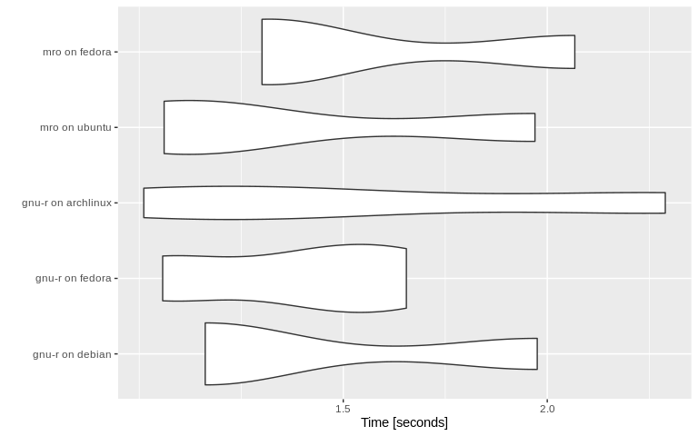

An R package to run you R code in different R implementations and platforms in Docker containers.
Installation
You can install the development version from GitHub with:
Example
library('altRnative')
pull_docker_image(c('gnu-r', 'mro'), c('debian', 'ubuntu', 'fedora'))
#> Detected API version '1.40' is above max version '1.39'; downgrading
benchmark_result = benchmarks_code(
code = "1 + 1",
r_implementations = c('gnu-r', 'mro'),
platforms = c('debian', 'ubuntu', 'fedora', 'archlinux'),
times = 3
)
#> Detected API version '1.40' is above max version '1.39'; downgrading
#> Detected API version '1.40' is above max version '1.39'; downgrading
#> Detected API version '1.40' is above max version '1.39'; downgrading
#> Detected API version '1.40' is above max version '1.39'; downgrading
#> Detected API version '1.40' is above max version '1.39'; downgrading
#> Detected API version '1.40' is above max version '1.39'; downgrading
#> Detected API version '1.40' is above max version '1.39'; downgrading
#> Detected API version '1.40' is above max version '1.39'; downgrading
#> Detected API version '1.40' is above max version '1.39'; downgrading
#> Detected API version '1.40' is above max version '1.39'; downgrading
#> Detected API version '1.40' is above max version '1.39'; downgrading
#> Detected API version '1.40' is above max version '1.39'; downgrading
#> Detected API version '1.40' is above max version '1.39'; downgrading
#> Detected API version '1.40' is above max version '1.39'; downgrading
#> Detected API version '1.40' is above max version '1.39'; downgrading
library('ggplot2')
autoplot(benchmark_result)
#> Coordinate system already present. Adding new coordinate system, which will replace the existing one.
Documentation
Documentation is created with roxygen2 and the website with pkgdown. Render both with the following commands:
Contribute
Please note that the ‘altRnative’ project is released with a Contributor Code of Conduct. By contributing to this project, you agree to abide by its terms.